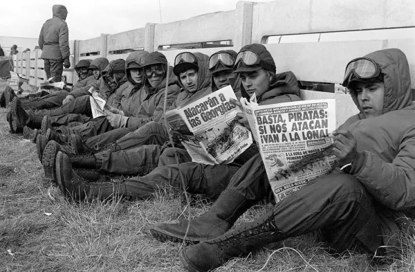

Malvinas, 2 de abril de 1982
Conflicto que terminó con la muerte de 649 jóvenes argentinos.
El 5 de abril, el Gobierno británico envió una importante fuerza naval para recuperar las islas. La guerra duró 74 días y finalizó el 14 de junio de 1982 con la rendición argentina.
En total murieron 649 militares argentinos, 255 militares británicos y tres civiles isleños. La soberanía de las Islas Malvinas continúa siendo un tema de reclamo para Argentina.
¿Por qué recordar Malvinas?
La Guerra de Malvinas es uno de los acontecimientos más importantes de la historia argentina reciente. Recordar a quienes participaron y perdieron la vida en el conflicto es una forma de mantener viva la memoria y comprender la importancia de la paz y la diplomacia.
Temas que encontrarás en este sitio
- Antecedentes históricos.
- Desarrollo de la guerra.
- Participación de los soldados argentinos.
- Consecuencias políticas y sociales.
- Imágenes y material histórico.
